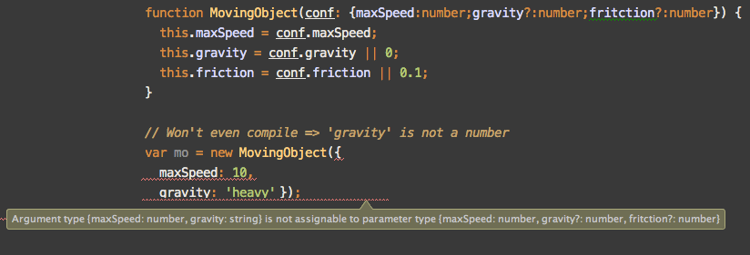
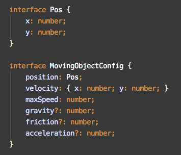

Oliver Zeigermann / @DJCordhose
Nils Hartmann / @nilshartmann
Online version at: http://djcordhose.github.io/serious-javascript/slides/jsunconf-types.html
function drawSquare(conf) {
if (conf.fillStyle) {
context.fillStyle = conf.color;
}
context.fillRect(conf.x, conf.y, conf.size, conf.size);
}
drawSquare({
fillStyle: 'red',
x: 10,
y: 10,
size: 20
});
function drawSquare(conf) {
console.log(typeof conf.fillStyle);
// => string
console.log(typeof conf.x);
// => number
console.log(typeof conf.size);
// => undefined
}
drawSquare({
fillStyle: 'red',
x: 10,
y: 10
});
var squareConfig = {
fillStyle: 'red',
x: 10,
y: 10
};
var aNewPropertyName = getAPropertyName();
squareConfig[aNewPropertyName] = 10; // which property is added here???
var aPropertyName = getAPropertyName();
delete squareConfig[aPropertyName]; // which property is removed here???
function drawSquare(conf) {
if (typeof conf.fillStyle !== 'string') {
throw new Error("Config object needs fillStyle of type string");
}
if (typeof conf.size !== 'number') {
throw new Error("Config object needs size of type number");
}
// ...
}
// Will fail at runtime
drawSquare({
fillStyle: 'red',
x: 10,
y: 10
});
Types (Classes) can be defined using constructor functions
function Ball(config) {
this.position = config.position;
this.r = config.r;
this.color = config.color;
}
Ball.prototype.draw = function() { ... }
var ball = new Ball();
console.log(typeof ball)
// => object
console.log(ball instanceof Ball)
// => true
ball.draw();
Prototype-based inheritance
function MovingBall(config) {
// Invoke super constructor
MovingBall.Ball.call(this, config);
this.acceleration = config.acceleration;
}
// Create Prototype Hierarchy
MovingBall.prototype = Object.create(Ball.prototype);
MovingBall.prototype.constructor = MovingBall;
MovingBall.Ball = Ball.prototype;
var gamelib = {};
(function() {
function Canvas() {
}
function Ball(config) {
// ...
}
// export ball
gamelib.Ball = Ball;
})();
// => Error: 'internal' type
new gamelib.Canvas();
// => Works: 'public' type
new gamelib.Ball({...});
/**
*
* @interface
*/
function HasName() { }
/**
* @returns {string}
*/
HasName.prototype.getName = function() {};
/**
*
* @param name {string}
* @param age {number=}
* @constructor
* @implements {HasName}
*/
function Person(name, age) {
this.name = name;
this.age = age;
}
/**
* @type {Person}
*/
var olli = new Person('Olli', 43);
interface HasName {
getName(): string;
}
class Person implements HasName {
constructor(private name: string, private age?: number) {
}
getName() {
return this.name;
}
}
var olli: HasName = new Person('Olli', 43);
function MovingObject(config) {
// ...
}
// What parameters are required for MovingObject ????
var mo = new MovingObject( { ??? } );
Problems reported by the Compiler
Types will be be gone at runtime, no runtime checking
Contain fields and methods - structural compatibility
function SoundManager(loudness) {
ManageableObject.call(this, "The Game's SoundManager");
this.loudness = loudness;
// private
var audioContext = SoundManager.createContext();
}
// Prototype Inheritance
_extends(SoundManager, ManageableObject);
// Static
SoundManager.createContext = function() { ... }
// Instance member
SoundManager.prototype.play = function() { ... }
var soundManager = new SoundManager('very loud'); // => Correct?
soundManager.play();
var gamelib = gamelib || {};
(function() {
// 'public' or 'private'??? What 'type'???
var canvas;
// Is this 'public' or 'private'???
function KeyboardObserver() {
}
// Is this 'public' or 'private'???
function SoundManager(config) {
}
// export public members
gamelib.SoundManager = SoundManager;
gamelib.canvas = canvas;
})();
Oliver Zeigermann / @DJCordhose
Nils Hartmann / @nilshartmann